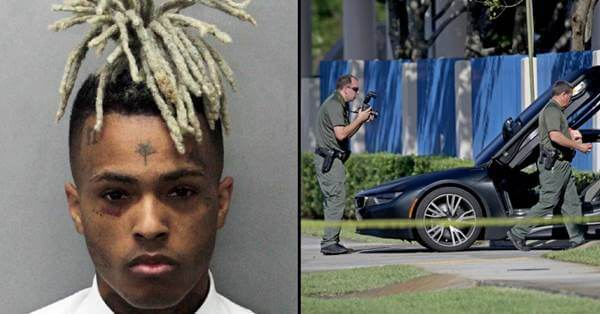
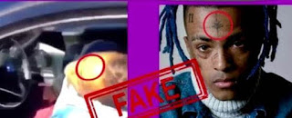
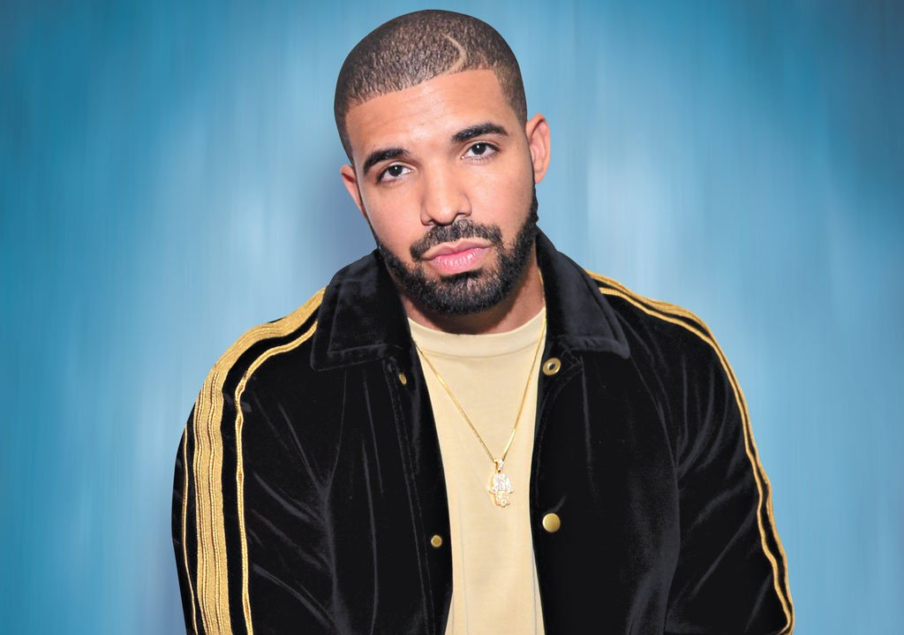
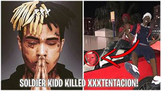
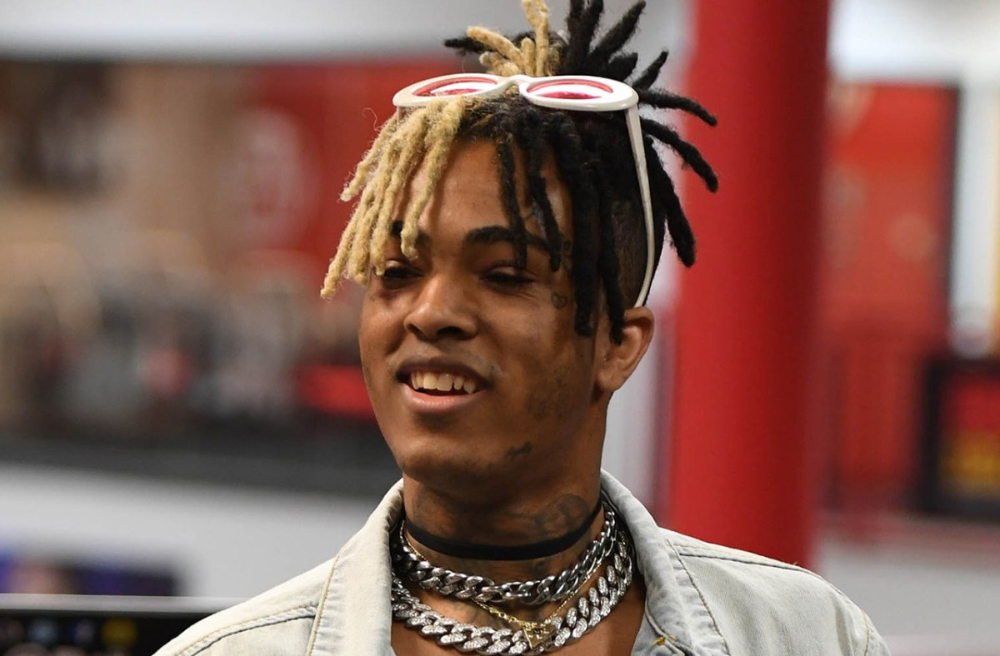

Jahsen Dwayne Onfroy adalah seorang pemuda yang cukup tinggi namanya saat ini.lahir pada 23 Januari 1998 di Florida Amerika Serikat. Dalam dunia entertaniment ia lebih dikenal dengan sebutan XXXTentacion ("I dont know why").X adalah seorang penyanyi rapper muda yang sangat bertalenta. Di usianya yang sangat muda, ia sudah merilis beberapa album dan singel yang memiliki jutaaan viewers di Youtube. Lagu-lagunya sangaat dikenal dan diminati oleh masyarakat pecinta musik. Tak heran jika ia sering mendapat prestasi dalam dunia musik. Namun tak sedikit pula orang yang memusuhinya. Ibarat sebuah pepatah mengatakan bahwa semakin tinggi sebuah pohon maka semakin kencang pula angin yang menerjang. Demikian yang terjadi pada penyanyi rapper muda ini.Walaupun memiliki jiwa yang cukup pemberontak ( Kabarnya ia putus sekolah pada kelas X dan keluar masuk penjara, sehingga banyak kontroversi yang mengelilingi hidupnya saat itu), XXXTentacion juga banyak melakukan amalan-amalan semasa ia hidup, ia sering berdonasi kepada orang-orang yang kurang mampu. Dari beberapa interview ia juga mengaku bahwa ia ingin membuat perubahan dalam hidupnya untuk hal-hal yang lebih berguna. ("That's so touching").
Ditembaknya XXXTENTACTION
Namun sayangnya, pada hari senin, 18 Juni 2018, XXXTentacion ditembak oleh orang yang tidak dikenal, didalam mobilnya sendiri ( "That's so scary, bayangin kalian ditembak oleh orang yang tidak dikenal di 'rumah' kalian sendiri" No! ) Berikut adalah sedikit timeline kejadiannyaa : * Pada 18 juni 2018 Saat itu, X pergi ke sebuah Bank untuk menarik uangnya , lalu ia pergi ke dealer motor * Pukul 15 : 30 X masuk ke dealer motor bersama seorang temannya * 16 : 00 X meninggalkan dealer motor dan masuk ke mobilnya, ia menyetir lalu pergi. Kesaksian orang-orang yang ada, saat ia ditengah jalan tiba-tiba ada mobil hitam yang berhenti tepat di depannya. Dari dalam mobil itu tampak 2 orang bersenjata keluar dan menghampiri X. Ia sempat menodong X, dan meminta beberapa barangnya, namun X mengelak hingga tertembak di bagian leher. Menurut saksi mata, 2 orang yang tidak dikenal itu sempat menarik tas X sebelum akhirnya mereka melarikan diri. Hingga akhirnya pada pukul 17:27 XXXTentacion dikonfirmasi meninggal dunia ( Kabarnya, ia sempat koma selama beberapa saat sebelum akhirnya meninggal). Pelaku merupakan 2 orang berkulit hitam yang memakai topeng merah. Setelah dikonfirmasi dan berita itu beredar, secara spontan terjadi kebingungan dan kehebohan ditengah-tengah masyarakat. Sehingga kasus ini juga sempat viral di sosial media. Sesaat setelah berita itu meluas, bermunculan pula beberapa teori konspirasi di media.
XXXTentacion memalsukan kematiannya
Alasan pertama, Hal ini mungkin menjadi teori pertama yang dipercaya oleh masyarakat. Sesaat setelah kematiannya, beredar sebuah video dimana X terbaring di mobilnya (Setelah ia tertembak), namun dalam video itu tidak ditemukan sama sekali darah di lehernya. Sedangkan menurut reportase yang beredar ia ditembak 6 kali dibagian leher. Tidak hanya itu, tato yang ada di 'jidad' X ("Tato semacam gambar pohon gitu") tidak ada kelihatan dalam video tersebut. "How can?? Apakah itu bukan X? Apakah dia lari, lalu mengganti dirinya menjadi orang lain sebagai orang yang sudah meninggal? Settingan?? I dont know hhh"). Sebelum kematiannya, salah seorang penggemar membagikan video yang sebelumnya diunggahnya secara langsung di Instagram. "Jika hal terburuk datang, jika saya meninggal atau hal buruk lainnya dan saya tidak bisa keluar dari mimpi saya, saya setidaknya ingin tahu kalau anak-anak mengerti pesan saya dan bisa membuat sesuatu dari diri mereka dan bisa mengambil pesan saya atau menemukan jawaban untuk solusi dalam hidup. Terlepas dari segala hal negatif seputar nama saya, terlepas dari hal buruk yang orang katakan tentang saya," katanya."Saya hanya ingin mengatakan, saya menghargai dan mencintai kalian semua dan percaya ke kalian semua," lanjut X.Selain itu, X pernah mengupload video dimana ia seakan-akan bunuh diri di sebuah pohon yang cukup besar yang ternyata itu hanya untuk video klip X.
Tampaknya, ini adalah alasan yang paling dipercaya dan jelas bahwa XXXTentaction sudah merencanakan kematiannya ( "Atau dalam kata lain ia hanya berpura-pura. I dont know, this is just a theory" ) Sebelum ia meninggal, ia sempat merilis video klipnya yang terbaru. Dalam video itu X tampak mendatangi makamnya sendiri ( "Bayangin, ia merilis sebuah video dimana ia mendataangi makamnya sendiri dan setelah itu dia benar-beenar meninggal. No!! so crazy Dari teori di atas, banyak orang yang percaya bahwa semua hanya settingan, X baik-baik saja. Semua ini hanya bertujuan agar lagunya banyak dilihat dan didengar, dan karirnya akan semakin tinggi. Next!
XXXTentacion dibunuh oleh Drake
Sebelum akhirnya mereka berkontroversi, XXXTentacion dulu sangat menyukai Drake yang juga sebagai Rapper (Mennyukai dalam arti dia mengidolakan Drake). Suatu hari ketika X sangat sukses di dunia musik ( "Bisa dibilang naik daun" ). Drake sempat meng-contact X. Drake menawarkan X untuk berkolaborasi dengannya. ("Bayangin aja, ketika kita diajak sang idola berkolaborasi dengan beliau, pasti bakal seneng banget" ). Tentunya X bangga dan setuju atas tawaran idolanya itu. Namun sangat disayangkan, entah kenapa semenjak itu Drake tidak pernah berkomunikasi lagi dengan X.Hingga suatu saat, Drake merilis sebuah lagu yang bit nya sangat mirip dengan lagu X yang berjudul Look at me. Semenjak itu, terjadilah kontroversi antara Drake dan XXXTentacion. Instastory-XXXTentacion-sebelum-meninggal "JIKA ADA SESEORANG YANG MEMBUNUHKU DIA ADALAH @champagnepapi AKU MENGADU SEKARANG" (@champagnepapi adalah akun instagram Drake). Demikian yang diungkapkan X saat itu. Dari kalimat itu seakan ia telah diancam oleh Drake dan mengadu pada public.Dan yang paling menyeramkan adalah dimana saat Drake merilis sebuah lagu (3 minggu sebelum X ditembak) yang berjudul I'm upset. Yang potongan liriknya adalah sebagai berikut : SMS, triple X That's the only time I ever shoot below the neck Why you keep on shootin' if you know that nigga dead? That's the only kind of shit that gets you some respect
SoldierKids sebagai pembunuh XXXTENTACTION
Itulah satu-satunya waktu saya pernah menembak dibawah leher Kenapa kamu terus menembak jika kamu tahu nigga itu mati? (Arti nigga, lihat di sini). Itulah satu-satunya jenis kotoran yang membuat anda merasa terhormat ("What?? lagu itu seakan menceritakan semua rencananya, lirik tersebut sama persis seperti apa yang terjadi pada X"). Namun, tidak sedikit juga orang yang percaya bahwa Drake tidak melakukannya sendiri. Ia meminta bantuan kepada seorang temannya yang juga Rapper, Soldier Kidd. Banyak yang percaya bahwa Soldier Kidd terlibat karena sebelumnya ia pernah memposting sebuah foto dimana didalam mobilnya terdapat 'topeng merah' (Pelaku pembunuh X menggunakan topeng merah). Soldier-Kidd-diduga-pembunuh-XXXTentacion. Pada hari yang sama dengan kejadian, Soldier Kidd memposting instastory, dimana ia mengunjungi sebuah restoran bernama Hook Fish and Chicken. Restoran itu tidak jauh dari lokasi tertembaknya X. Dalam foto postingan tersebut terdapat sebuah pistol diatas meja makan Soldier. Hal itu justru dikaitkan dengan kasus penembakan X, sehingga membuat orang-orang semakin yakin bahwa Soldier Kidd adalah pelaku dibalik semua kasus ini. Namun beberapa hari setelah dugaan ini bermunculan, Soldier Kidd mengaku tidak terlibat dalam kasus ini dan turut berduka cita. Hal ini tentu saja tidak membuat orang-orang langsung percaya. Bahkan kematian XXXTentacion juga dikaitkan dengan pertengkaran antara Drake dengaan Pusha T.Yang kabarnya Drake mempergoki bahwa X mengetahui beberapa privasinya Drake. Tidak lama ketika X mengetahui titik terang pertengkaran mereka berdua, X membocorkan Privasi itu kepada Pusha T. Pusha T pun mempublishnya. Kejadian itupun membuat Drake marah dan akhirnya membunuh X. Namun sebenarnya Drake sudah memperingati X dalam sebuah lagu untuk tidak mengumbar privasinya tersebut kepada siapa-siapa.
XXXTentaction dijadikan tumbal Illuminati
 Rasanya kurang lengkap jika teori konspirasi tidak dikait-kaitkan dengan iluminati. Banyak yang tidak percaya bahwa di usianya yang sangat muda, X dapat memperoleh kesuksesan seperti itu. Pasalnya, setiap lagunya yang dirilis tidak sedikit yang masuk trend di spotify atau bebrapa aplikasi musik lainnya (Bahkan sekarang sudah memecahkan rekor Taylorswift, lagu X paling banyak didengarkan selama 24 jam) Pada teorinya, X adalah huruf ke 24 dari huruf abjad. 2 + 4 = 6 Jadi XXX = 6 6 6 Ia meninggal pada 18 juni 2018 Tanggal 18 adalah 6 + 6 + 6 Juni adalah bulan ke 6 Dan angka 18 pada tahun 2018 adalah 6 + 6 + 6 ("Woowww!! Itu tampak nyata, tapi .. entahlah bagaimana. Hanya tuhan yang tau") X memiliki seorang teman yang bernama Ski Mash. Dalam sebuah wawancara pada Oktober 2017 lalu, menyatakan bahwa ia dan seorang temannya akan menjadi tumbal pengorbanan iluminati. Itulah sebabnya ia menjauhkan diri (Namun Ski Mash tidak memberitahu siapa teman yang ia maksut). Ada sebuah alasan yang sangat kuat sehingga dipercaya bahwa XXXTentacion menyembah iluminati. Yaitu dari sebuah lagunya yang berjudul I spoke to the devil in miami. Potongan liriknya adalaah berikut : I Spoke to a 'baphomet' Saya berbicara dengan baphomet He Said he would save me if i Dia berkata akan menyelamatkanku jika aku I Gave him one thing he needed Aku memberinya satu hal yang dia butuhkan What is this thing I pleaded? Apa yang aku inginkan? Boy, it's the key to even Anak laki-laki itu merupakan kuncinya ("Dalam lagu itu, seolah-olah ia curhat tentang pemuja setan (Baphment). Jika dilihat lirik secara keseluruhan ( di sini) tampaknya ia stres dan ingin mengakhiri semuanya. Ohh i don't know)
Namun, dari fakta yang dikonfirmasi oleh pihak kepolisian 2 hari setelah kejadian bahwa Dedrick Devonshay Williams adalah pelaku yang ditangkap atas pembunuhan X. Namun selama masa persidangan tidak ada pengakuan yang diberikan oleh Dedrick bahwa ia adalah orang dibalik semua ini. Jadi banyak yang percaya bahwa itu semua hanyalah sebuah settingan belaka.Mungkin kita tidak akan tahu bagaimana kejadian yang sesungguhnya terjadi. Kita hanya bisa menyerahkan kepada yang Maha Kuasa. Ada konspirasi lain yaitu kematian ini hanya karakter dari xxxtentaction saja, tetapi orang aslinya tidak dan Jahsen Dwayne Onfroy ini menghilangkan tatto diseluruh badanya lalu sekarang ia tinggal di Brazil.